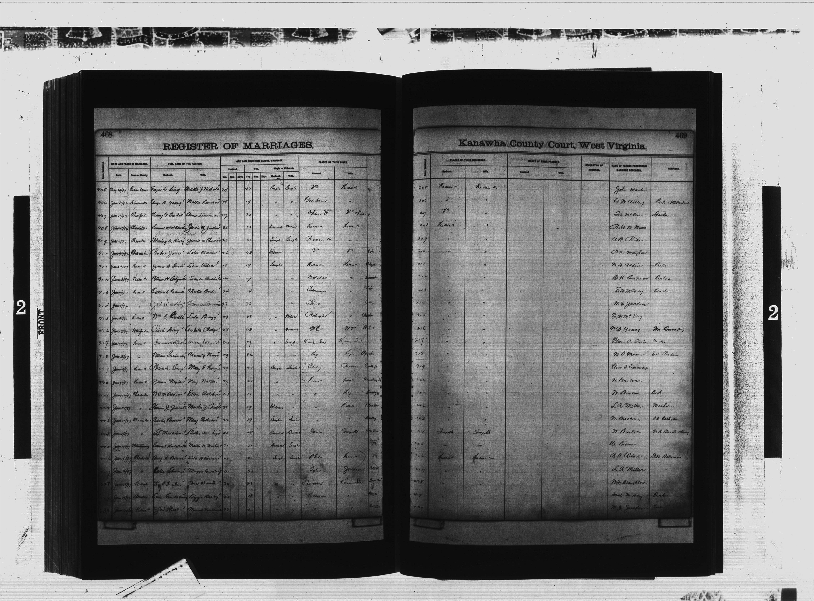

Mary Ida Hayes Samples
14 August 1875 – 13 June 1959
Quick Facts
Immediate Family
Parents
- Vincent Alexander Hayes and Elizabeth A. Naylor Hayes (compiled profile; death certificate informant later misidentified her father as Vincent Samples)
Spouses
- Philander Hamelton Samples (marriage index 1897)
Children
- Edith Elizabeth Samples Hoff (1903–1979)
- Berta May Samples
- Oscar Vincent Samples
- Philip Perry Samples
- Vina/Lovina Samples
- Ruth E. Samples
- Charles G. Samples
- Kitty T. Samples
- Gussie E. Samples
- One additional daughter appears as private/unnamed in a derivative tree; identity not established
Siblings
- Not yet identified in this research pass
On Family Tree Sites
Person Archive
Life Timeline
14 August 1875
West Virginia birth index, Big Sandy District, Kanawha County.
1897
Marriage index pairs Philander Samples and Mary S. Hayes in Kanawha County.
1910
Census index lists Ida M. Samples as wife in Philander H. Samples’s household.
1920
Census index lists Mary T. Samples as wife in Philander Samples’s household.
13 June 1959
Death index reports Mary Ida Samples in Kanawha County; grave memorial reports Charleston and Rolling Hills Cemetery.
Life Story
Mary’s birth index names her as Mary J. Hays and gives 14 August 1875. Compiled profiles identify her as Mary Ida Hayes and connect her to Vincent Alexander Hayes and Elizabeth A. Naylor.
A 1959 death record summary reported by WikiTree lists her father incorrectly as Vincent Samples; the author’s research note argues this is a mistake and points to a birth record and 1880 census. Preserve the discrepancy pending direct review of those originals.
The same colorized couple painting is attached to Mary’s and Philander’s memorials. It is retained as an unattributed-by-original-caption family image, not a verified individual portrait.
Photo Gallery



Sources and Evidence
- WikiTree Mary Ida Hayes Samples profile: compiled source citations and noted death-record father discrepancy.
- Mary Ida Hayes Samples memorial: derivative dates, cemetery, photos and family links.
- West Virginia birth index: Mary J. Hays, 14 August 1875.
- West Virginia Vital Research Records marriage register image: Philander Samples and Mary I. Hayes, indexed in 1897.
- 1910 U.S. census index: Ida M Samples in Philander’s household.
- 1920 U.S. census index: Mary T Samples in Philander’s household.
Research Notes and Open Questions
- A derivative death-record transcription names her father as Vincent Samples, while her 1880 census/birth record are reported to support Vincent Hayes. Do not repeat the erroneous maiden-surname implication as settled.
- Census indexes use Mary’s middle initials inconsistently (M. I., Ida M., Mary T.); records otherwise align on spouse Philander and children.
- No sibling group has been independently established for Mary in this pass.
DNA
No DNA evidence reviewed for this profile.
Family Notes
Profile updated 24 November 2026. Relationships are sourced and uncertainty is retained where records conflict.